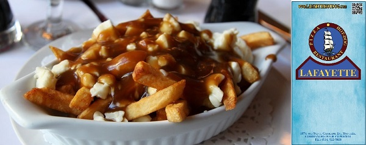
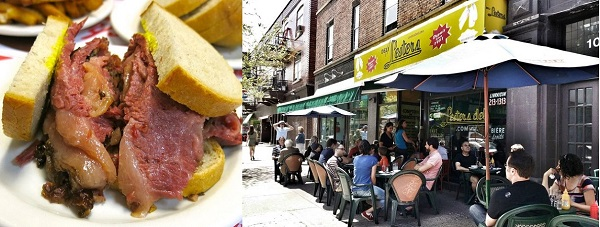
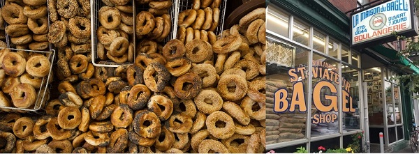

Foods and Restaurants
Don't miss out on Montréal's famous foods such as:
- Poutine
- Smoked Meat
- Bagels
Lafayette's poutine, Lester's smoked meat, and St Viateur's bagels are famous go-to spot to get these foods.
Poutine
This famous Canadian dish is consist of french fries topped with cheese curds and brown gravy. Poutine have originated in Québec in the 1950s.
One of Montréal's top poutine restaurant is Restaurant Lafayette. For more information, you can visit their website at: http://www.lafayettehotdog.com/
Smoked Meat
This delicious course is a beef brisket that is salted and cured with various spices and flavorings. Its usually served with rye bread and mustard. It was first brought by Jewish immigrants from Central and Eastern Europe.
One of Montréal's best Smoked Meat can be found at Lester's deli shop. For more information, you can visit their website at: http://www.lestersdeli.com/
Bagels
Montréal bagels is made either handmade or wood fired baked. Montréal bagels are usually thinner, smaller, and sweeter than bagels from other places. One of Montréal's iconic bagel shop is St Viateur Bagel.
For more information about St Viateur Bagel Shop, visit their website at: http://www.stviateurbagel.com/
Other notable Montréal Restaurants
| Restaurant | Description | Notable Foods | Website |
|---|---|---|---|
| Les Deux Gamins | A Parisian style casual dining. Restaurant has three distinct dining rooms that provides unique experience for diners. | Foie Gras and Duck Confit | http://lesdeuxgaminsmontreal.com/en/home/ |
| Ichigo Ichie | A Casual Cuisine that has Gluten-Free Dishes. They also offer vgetarian dishes and organic foods. | Yasai Tempura | http://www.ichigoichie.ca/#menu_menu |
| Brit and Chips | This establishment brings the staple dish of the British people | Fish and Chips | http://www.britandchips.com/#home |
| mapoule | This Casual Counter Serve Portuguese grill is famous for its Portuguese Grill Chicken not only in Montréal, but also all over the world. | Portuguese Chicken | mapoulemouillee.ca/ |